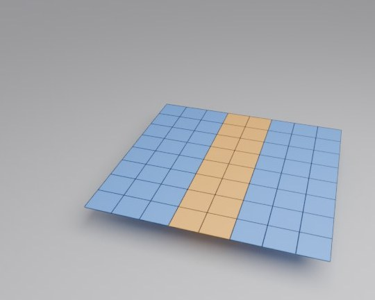
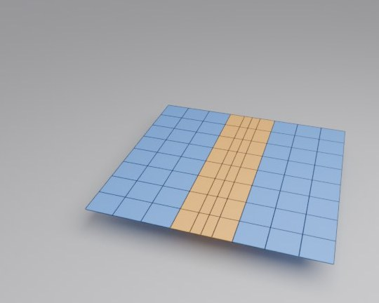

Bonus lesson
Offset Edge Slide
Offset Edge Slide adds two edge loops on either side of the loops you have selected. It works in Edit Mode. The menu is Edge › Offset Edge Slide, and the shortcut in the manual is Shift-Ctrl-R.


Options
The manual lists these options for the tool:
Factor is the location of the new loops relative to the center loop and the outside edge loops. Cap Endpoint extends the loop by creating triangles at endpoints. Even is only available for single edge loops. It matches the shape of the edge loop to one of the adjacent edge loops, and Flipped flips the target loop when Even is on. For both, the manual points to the Edge Slide tool for details.
Clamp keeps the loops within the edge extents. Correct UVs corrects UV coordinates when transforming.
Read the manual page on Offset Edge Slide.
Try it
This exercise is our own suggestion and has not been run step by step in the GUI. Add a Grid, enter Edit Mode and switch to Edge select mode. Alt-click an edge to select a loop of edges. Choose Edge › Offset Edge Slide, or press Shift-Ctrl-R, and move the mouse. Check the Factor option in the panel at the bottom left. Use Ctrl+Z to undo.